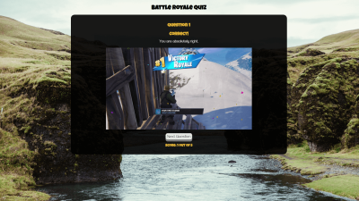

Bookmarky
Bookmarky is a small web app which allows users to bookmark websites and filter them based on a rating system.

Battle Royale Quizlett
A simple quiz to test the users knowledge of recently released video games.